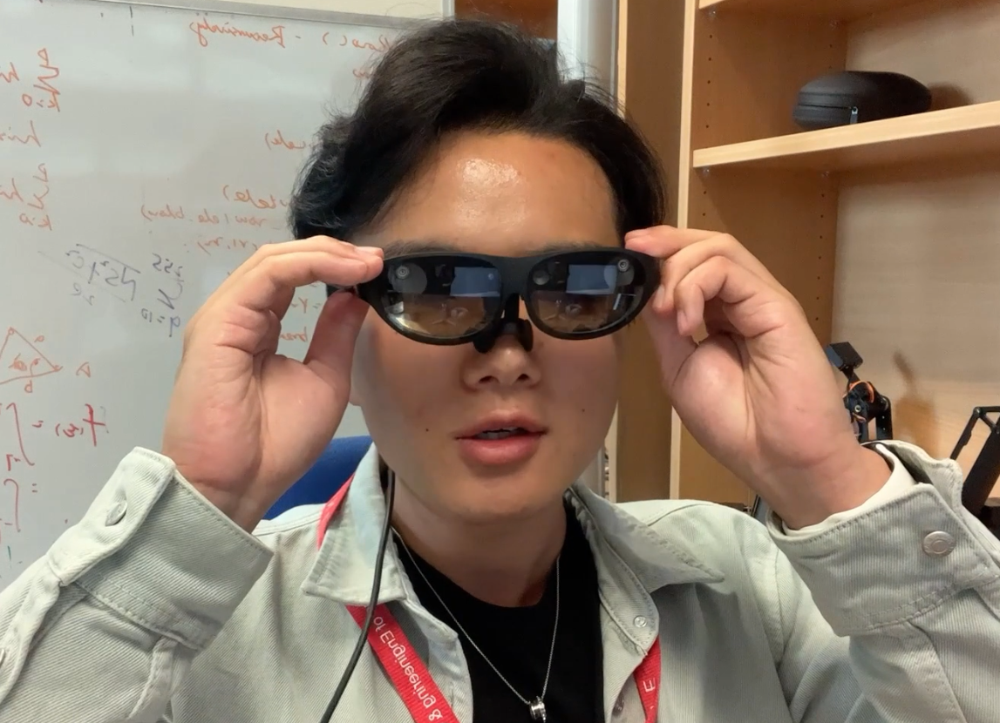
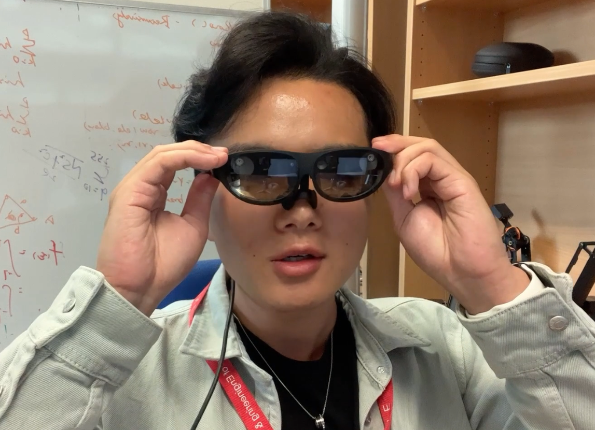
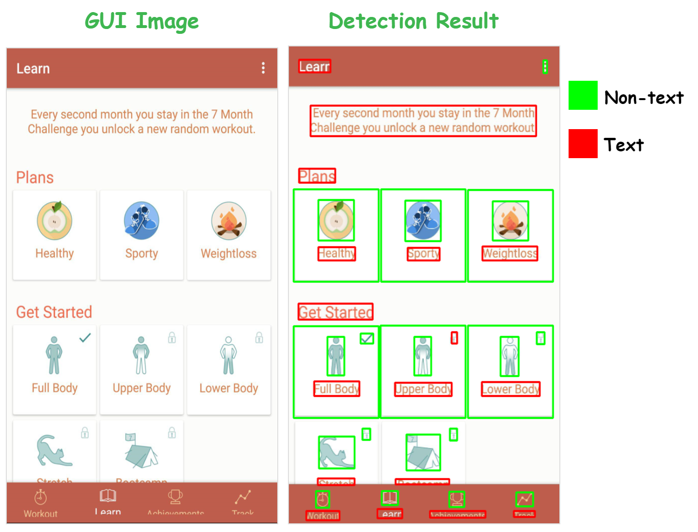
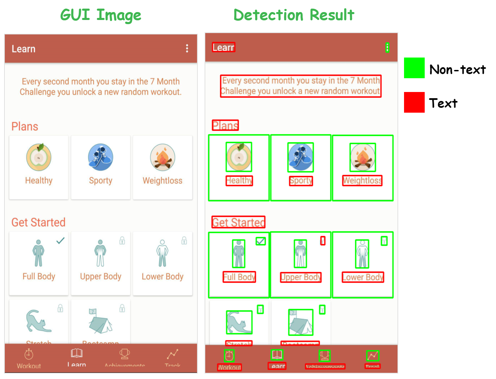

Research Projects
2022 (Ph.D)
Visual UI Semantic Understanding
From visual aspect (image) to intelligently analyze the UI semantics, including visual attributes (shape, location) and semantics (class, role, functionality) of the elements and widget blocks. Benefiting plenty of UI automation tasks such as auto testing, UI design search and screen reader.
Software Eng Visual Intelligence
NiCro
Record App actions on one device, Replay them on multiple devices with different Operating Systems (iOS or Android) and screen sizes. The system is purely based on visual intelligence and hence is Non-Intrusive and supportive of Cross-Device and Cross-Platform testing readily.
Software Eng Computer Vision UI Auto Testing

AR x Object Detection
Integrate Natural Object Detection with Augment Reality (AR) Glasses. A fundamental research for various application.
Computer Vision Augment Reality
 


Palm Recognition
Recognize palm area from hand image and rotate it to upright.
Computer Vision
2021 (Ph.D)
APP Voice Control x Robot Arm
Identify the target UI component in Any APP by user saying what they want in natural language, and use Robot Arm to interact with the device automatically.
Software Eng Computer Vision UI Automation
UI Component Grouping
Based on a systematic psychological theory - Gestalt Principles, mimic how human perceive discrete parts as an entire to group components in a GUI into layout blocks.
Software Eng Computer Vision UI Understanding
ezForm
Transform a form image (photo or screenshot) into a highly interactive form webpage which provides facilitative filling experience.
Software Eng Computer Vision VI4P
2020 (Ph.D)
EasyD2C (Demo)
A demonstration website to show the modular UI code (HTML, CSS and React style code) generation from UI image.
Software Eng Computer Vision VI4P
UI Element Detection
An unsupervised approach to detect various UI elements from UI images, which is able to handle diverse UIs (e.g., mobile, desktop) without training on massive data.
Software Eng Computer Vision
 

2019 (Bachelor)
GUI Image Code Generation (Exploratory)
Generate UI code and skeleton tree from UI image. Meant to ease the GUI development process by synthesizing code automatically according to the design prototypes.
Software Eng Computer Vision
2018 (Bachelor)
Geographical Change Detection & Report
Detect changes (e.g., plants, constructions) on a given region or block at some time periods by contrasting satellite images using computer vision techniques.
Computer Vision
Universal Keywords Search Engine
Search related unstructured log files in various formats (txt, pdf, word) from massive database by given some keywords. The engine is built upon ElasticSearch and deployed with a user-friendly webpage.
Search Engine
2017 (Bachelor)
Digital Target Detection on Unmanned Aerial Vehicle
Detect targets in natural environment and recognize the digital numbers on them to instruct the unmanned Aerial Vehicle to complete certain action accordingly.
Computer Vision Unmanned Aerial Vehicle
Color Target Detection on Unmanned Aerial Vehicle
Detect colored target regions in the dynamic natural environment to instruct the unmanned Aerial Vehicle to complete certain action accordingly.
Computer Vision Unmanned Aerial Vehicle